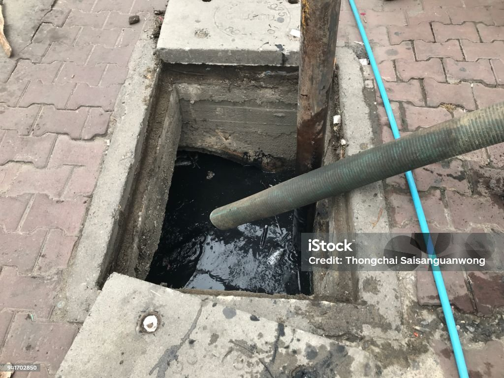

En Septiclean, ofrecemos un servicio integral de succión y eliminación de desechos de trampas de grasa, garantizando el cumplimiento de todas las normativas de transporte y disposición de residuos.
Nuestro enfoque se centra en la eficiencia, la seguridad y la responsabilidad ambiental.
Entendemos la importancia de mantener las trampas de grasa en óptimas condiciones para evitar obstrucciones y problemas ambientales.
Nuestro equipo está capacitado para realizar el servicio de manera eficiente y segura, minimizando cualquier impacto en sus operaciones.
En Septiclean, nos comprometemos a proporcionar soluciones confiables y sostenibles para la gestión de trampas de grasa.
Contáctenos para obtener más información y solicitar un presupuesto personalizado.
